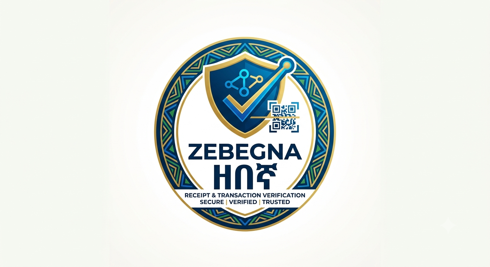

A receipt is only as trustworthy as its source. Zebebgna (Amharic for guard) is a cybersecurity toolkit that keeps fake and tampered receipts out of your hands. It extracts receipt data from six major Ethiopian banks and mobile-money services — CBE, Dashen, Awash, BOA, Zemen, and Telebirr — then puts that data on trial:
Zebebgna is the defensive counterpart to naive receipt-scraping libraries — it never trusts the receipt it fetches, and it never disables security checks to make a connection work.
For developers and security teams. One command to verify a receipt or audit an endpoint, with machine-readable JSON output.
For non-technical users. A simple browser form: choose the bank, paste the receipt link, get a color-coded verdict with a list of checks.
| Feature | Description |
|---|---|
| 🔒 Strict TLS everywhere | Every fetch verifies the certificate chain. Plain-HTTP URLs are refused; the insecure verify_ssl=False shortcuts common in scrapers are never used. |
| 🎣 Phishing detection | Flags raw-IP hosts, lookalike domains (typosquatting against known bank domains), punycode hosts, URL shorteners, and non-standard ports. |
| 📜 TLS certificate audit | Chain validation, hostname coverage (SAN), expiry warnings, and issuer reporting. |
| 🧮 Security headers audit | Checks HSTS (incl. includeSubDomains), CSP, X-Frame-Options, X-Content-Type-Options, Referrer-Policy, Permissions-Policy. |
| 🔍 Authenticity verification | Cross-field amount reconciliation (e.g. transferred + commission + VAT ≈ total debited), per-bank reference-number format checks, transaction-status validation, completeness checks. |
| 📊 Risk scoring | Every check yields a severity-tagged finding; the report summarizes a 0–100 score and a PASS / REVIEW / FAIL verdict. |
| ⚡ High performance | Connection pooling via requests.Session; multithreaded PDF parsing; cached Chrome driver for BOA receipts. |
This tool is built for defensive security only:
+---------------------------+
| zabagna / zebebgna CLI |
| webapp.py (Flask UI) |
+-------------+-------------+
|
v
+---------------------------+
| verify_receipt(bank,..) |
| audit_receipt_url(url) |
+-------------+-------------+
|
+----------------------+----------------------+
v v
+------------------+ +------------------------+
| EXTRACTORS | | VERIFIERS |
| cbe, dashen, | | phishing, tls, |
| awash, boa, | | headers, integrity |
| zemen, tele | +------------------------+
+------------------+ |
| +-----v-----+
v | Report |
+------------------+ findings | score, |
| SecureFetcher | ----------------------------> | status |
| HTTPS-only, | +-----------+
| TLS-verified |
+------------------+| Component | Responsibility |
|---|---|
zebebgna.fetch | SecureFetcher — HTTPS-only fetching with strict TLS verification, timeouts, bounded redirects, and connection pooling. Refuses non-HTTPS URLs (InsecureURLError). |
zebebgna.extractors | Per-bank parsing: PDF extraction (CBE, Dashen, Zemen) via pdfplumber; HTML tables (Awash, Telebirr) via BeautifulSoup; rendered pages (BOA) via headless Chrome. |
zebebgna.verifiers | Four independent check groups: phishing, tls, headers, integrity. |
zebebgna.report | Data model — Finding and VerificationReport with scoring and verdict logic. |
webapp.py | Flask application exposing the same pipeline through a browser form for non-technical users. |
Requires Python 3.8+. From the project directory:
pip install -e . # core (CLI + library)
pip install -e ".[web]" # + Flask web UI
pip install -e ".[dev]" # + pytestFor BOA receipts, a ChromeDriver matching your installed Chrome is required (the extractor drives a headless Chrome browser because BOA receipts render client-side).
zebebgna verify cbe "https://apps.cbe.com.et:100/?id=FT25211G11JQ21827223"
zebebgna verify dashen "https://receipt.dashensuperapp.com/receipt/387ETAP2522000WK"
zebebgna verify tele CHQ0FJ403OTelebirr accepts a bare receipt ID; all other banks require the full receipt URL. If the module
is not on your PATH, run python -m zebebgna.cli ... instead.
Runs only the transport/URL-level checks (phishing, TLS, headers) without extracting receipt data:
zebebgna audit "https://receipt.dashensuperapp.com/receipt/387ETAP2522000WK"{
"url": "https://receipt.dashensuperapp.com/receipt/387ETAP2522000WK",
"bank": "dashen",
"score": 74,
"status": "REVIEW",
"extracted_data": { "...": "..." },
"findings": [
{"severity": "info", "category": "tls", "message": "Certificate valid until ..."},
{"severity": "warn", "category": "headers", "message": "Missing security header: Content-Security-Policy"},
{"severity": "error", "category": "integrity", "message": "Dashen transaction total mismatch: ..."}
]
}
SCORE: 74/100 STATUS: REVIEWFull pipeline: extract → verify. Returns a VerificationReport.
from zebebgna import verify_receipt
report = verify_receipt("cbe", "https://apps.cbe.com.et:100/?id=FT25211G11JQ21827223")
print(report.score) # 0-100
print(report.status) # PASS | REVIEW | FAIL
for f in report.findings:
print(f.severity.upper(), "-", f.category, ":", f.message)Transport-only audit (no extraction):
from zebebgna import audit_receipt_url
report = audit_receipt_url("https://example-receipt-host/abc123")| Attribute | Description |
|---|---|
report.url | The URL that was checked. |
report.bank | Bank key (cbe, dashen, awash, boa, zemen, tele), or None for audits. |
report.data | Extracted receipt fields as a dict. |
report.findings | List of Finding objects. |
report.score | 0–100 security score. |
report.status | PASS, REVIEW, or FAIL. |
report.to_dict() | Full JSON-serializable report. |
Each Finding has severity (info / warn / error / critical), category
(tls / url / phishing / transport / headers / integrity / fetch), and message.
pip install -e ".[web]"
python webapp.py
# open http://127.0.0.1:5000The user picks the bank, pastes the receipt link (or Telebirr ID), and clicks Verify receipt. The result page shows:
The web app is a server that fetches URLs on behalf of its users, so it must be locked down before exposing it beyond your own machine:
zebebgna_ALLOWED_HOSTS="apps.cbe.com.et,transactioninfo.ethiotelecom.et" python webapp.py127.0.0.1 only — keep it that way unless you truly need remote access.phishing.py)| Check | Severity | Condition |
|---|---|---|
| Insecure scheme | critical | URL is not https. |
| Raw IP host | critical | Host is a literal IP address (e.g. 192.168.1.10). |
| Lookalike domain | warn | Registered domain ≥ 72% similar to a known bank domain (typosquatting). |
| Punycode host | warn | Host uses IDN encoding (xn--). |
| URL shortener | warn | Host is a known shortener (bit.ly, t.co, tinyurl.com, …). |
| Non-standard port | warn | HTTPS on a port other than 443. |
tls.py)| Check | Severity | Condition |
|---|---|---|
| Chain verification | critical | Certificate cannot be validated against trusted roots. |
| Hostname coverage | critical | Certificate SAN does not cover the hostname. |
| Expired certificate | critical | Current date is past notAfter. |
| Near expiry | warn | Certificate expires within 30 days. |
| Connection failure | error | No TLS session could be established. |
| Issuer / protocol | info | Informational: issuer and TLS version. |
headers.py)| Header | Severity if missing | Purpose |
|---|---|---|
| Strict-Transport-Security | warn | Forces HTTPS in browsers; blocks SSL-stripping. |
| Content-Security-Policy | warn | Limits what the page can load; contains XSS damage. |
| X-Frame-Options | warn | Prevents clickjacking via iframe embedding. |
| X-Content-Type-Options | warn | Disables MIME sniffing. |
| Referrer-Policy | info | Controls referrer leakage. |
| Permissions-Policy | info | Restricts browser feature access. |
integrity.py)| Check | Severity | Description |
|---|---|---|
| Transaction status | critical | Status other than SUCCESS / COMPLETED / PAID / DONE. |
| Amount reconciliation | error | Components (transferred + commission + VAT) do not sum to the stated total (±1 ETB). Per-bank for CBE, Dashen, Zemen. |
| Reference format | error | Reference number does not match the bank’s expected format (e.g. CBE references must start with FT). |
| Missing fields | warn | Required receipt fields (amount, date, reference, …) are absent. |
| Non-positive amount | error | Telebirr total paid is zero or negative. |
Each finding carries a severity penalty subtracted from 100:
| Severity | Penalty | Example |
|---|---|---|
| info | 2 | Certificate issuer, missing optional headers |
| warn | 10 | Missing HSTS/CSP, near-expiry cert, lookalike domain |
| error | 20 | Amount mismatch, bad reference, no connection |
| critical | 40 | Expired/invalid cert, phishing IP host, failed status |
| Score | Status | Meaning |
|---|---|---|
| ≥ 85 | PASS | No material findings; receipt can be trusted. |
| 55 – 84 | REVIEW | Weaknesses present; review notes before relying on the receipt. |
| < 55 | FAIL | Significant problems; do not trust without resolution. |
Any critical finding forces FAIL regardless of score.
| Bank | Type | Reference pattern | Extraction method |
|---|---|---|---|
| CBE | Bank | FT + 6–20 alphanumerics | PDF (pdfplumber, threaded) |
| Dashen | Bank | 8–24 alphanumerics | PDF (pdfplumber, threaded) |
| Awash | Bank | 6–30 alphanumerics/dashes | HTML table |
| BOA | Bank | 6–40 alphanumerics/dashes | Headless Chrome |
| Zemen | Bank | 6–30 alphanumerics | PDF (pdfplumber, threaded) |
| Telebirr | Mobile money | 8–12 uppercase alphanumerics | HTML page |
CBE additionally supports the helper extract_cbe_receipt_info_from_ft(ft_number, account),
which builds the receipt URL from an FT number plus the last 8 digits of the account.
pip install -e ".[dev]"
pytest tests/The suite (96 tests) covers URL/phishing heuristics, integrity math, report scoring, the SSRF guard (private hosts, redirect re-validation, allowlists), secure-fetch refusals, the TLS failure path, the full verification pipeline (network mocked), and the web UI form/report/allowlist behavior. Live-network extraction tests are deliberately not part of the default suite.
zebebgna/
+-- pyproject.toml # package metadata, deps, CLI entry point
+-- README.md # project documentation
+-- webapp.py # Flask web UI for non-technical users
+-- zebebgna/
| +-- __init__.py # public API: verify_receipt, audit_receipt_url
| +-- cli.py # zebebgna verify / audit commands
| +-- fetch.py # SecureFetcher (HTTPS-only, TLS-verified)
| +-- report.py # Finding, VerificationReport, scoring
| +-- templates/ # web UI pages (index, report)
| +-- extractors/ # per-bank parsing
| | +-- cbe.py dashen.py awash.py boa.py zemen.py tele.py
| +-- verifiers/ # security check groups
| +-- phishing.py tls.py headers.py integrity.py
+-- tests/ # 96 tests (verifiers + SSRF + web UI)
+-- docs/ # this documentationMIT License — see https://opensource.org/licenses/MIT.